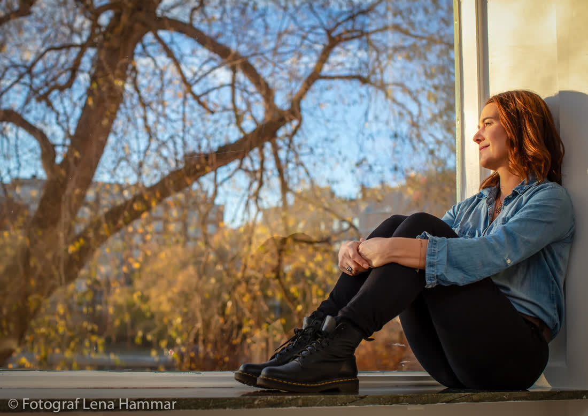
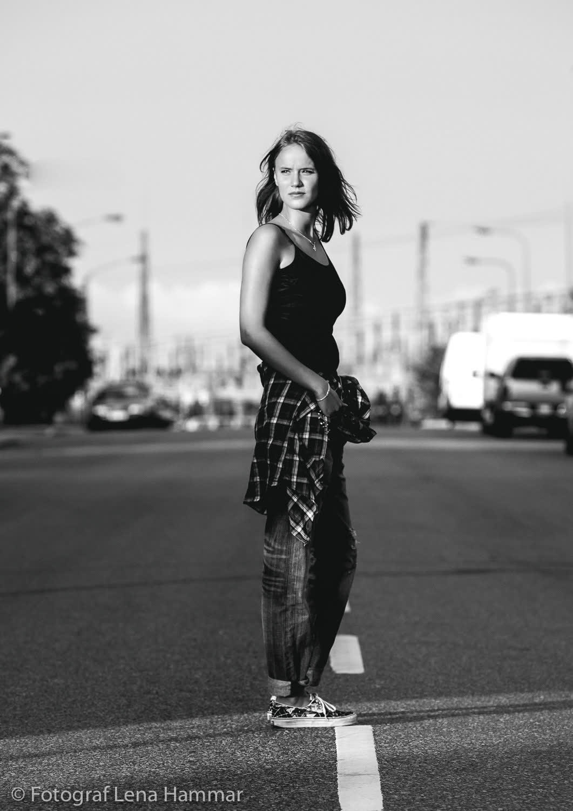
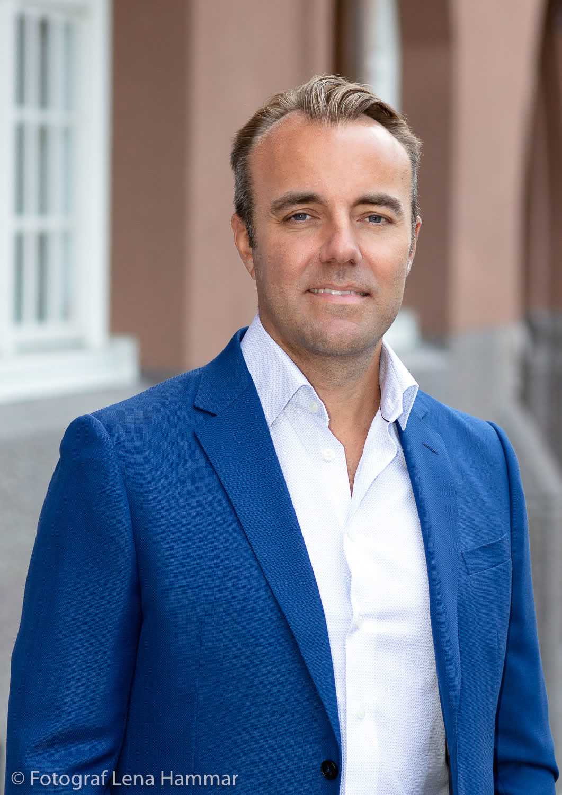
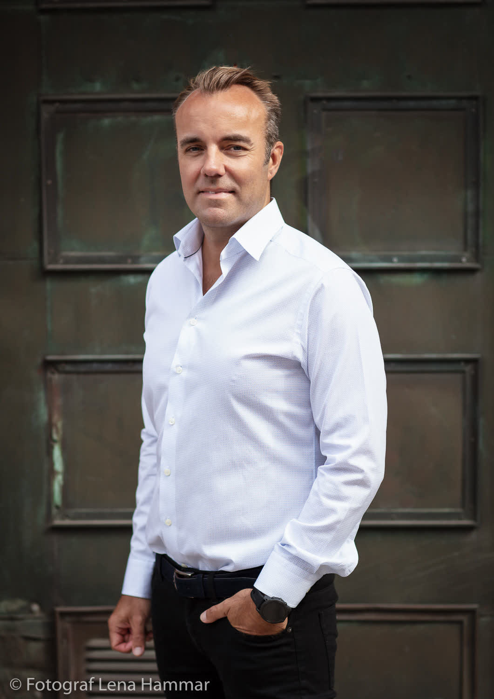
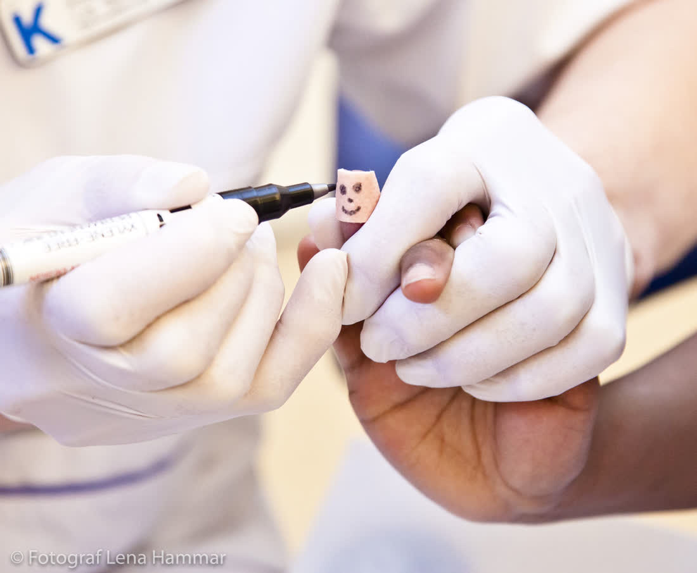

Jag fotar helheten också – men det är detaljerna som får er att gråta om tio år. Fläcken på kavajen efter talet. Pappas hand på ryggen. Lappen i fickan med löftena han aldrig läste upp.










 Bröllop
Bröllop FamiljPorträtt
FamiljPorträtt
Företag
Jag jobbade sju år som moderedaktör innan jag bytte till bröllop. Från redaktionen tog jag med mig ögat för ljus, tyg och ansikten – och allergin mot stela gruppbilder.
Jag bor på Väster med min fru och en surdeg som heter Gösta. Jag svarar på mejl snabbare än vad som är hälsosamt.
9 500 kr
3 timmar. Detaljer, vigsel, parporträtt. 200 bilder.
24 000 kr
Hela dagen, 10 timmar. Detaljfotografering av klänning, ringar och dukning.
31 000 kr
Allt ovan plus provfotografering och en tryckt tidning om er dag, 40 sidor.

"Hon fotade min klänning som om det var Vogue. Och mig som om jag var jag."Josefin & Ahmed, Örebro slott

"Vi har bilden på våra händer som bakgrund på båda telefonerna."Lova & Kim, Hjälmarsberg
Nej, hela dagen. Men jag avsätter alltid tid för detaljerna innan gästerna kommer.
Ringar, löften, skor, parfym, något ärvt. Lägg det i en låda så tar jag resten.
20 favoriter inom tre dagar, hela galleriet inom fyra veckor.

Berätta om er dag – datum, plats, och en detalj ni inte vill glömma.
mira@miralund.se